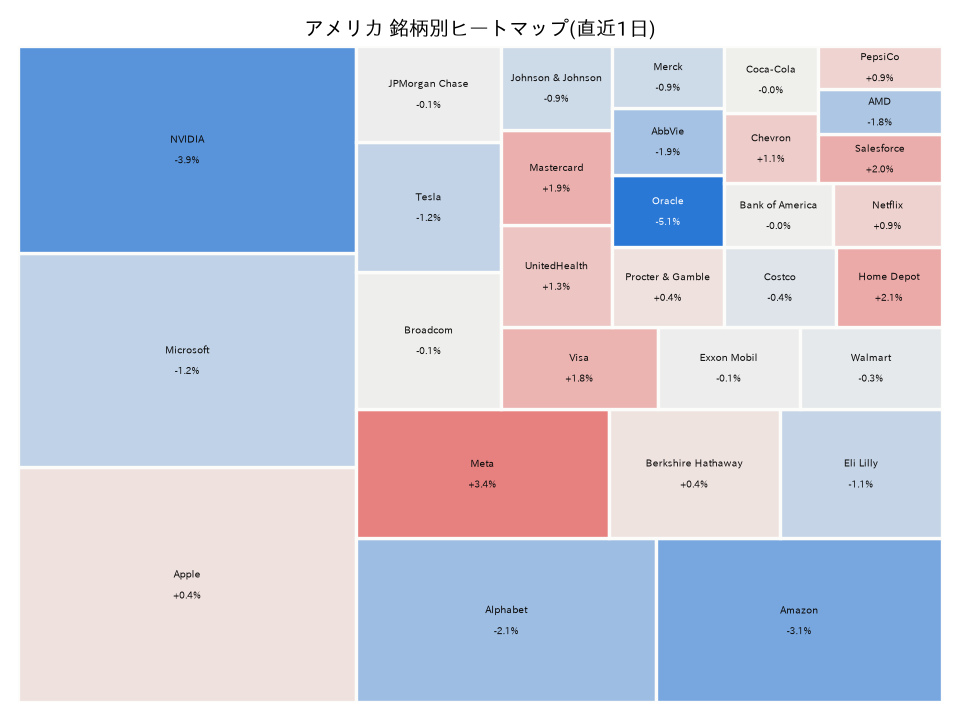
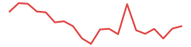
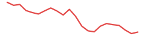
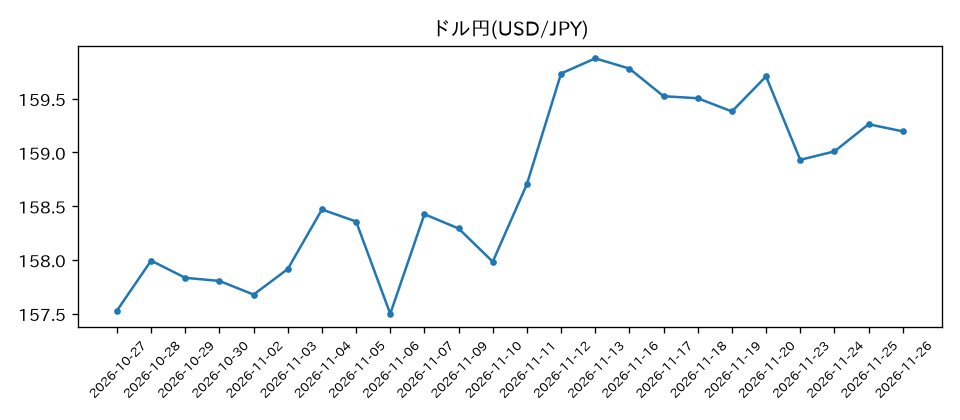
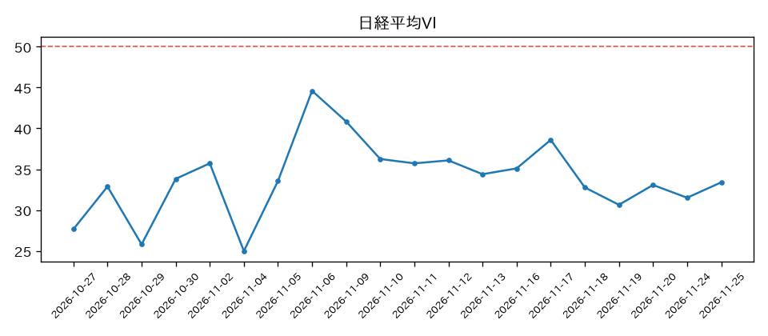
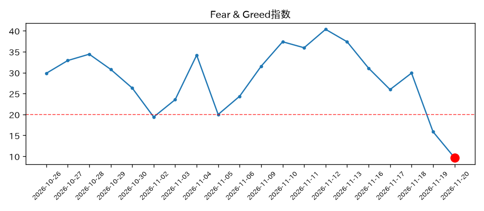

日本 銘柄別ヒートマップ(直近1日)

# 本日の市場分析コメント（2026年11月27日） ## 日経平均株価 本日の日経平均は**58,711円**で、前日(57,499円)から**約1,212円の反発**となりました。月初の64,000円台から11月20日には56,436円まで大きく下落しており、直近1か月で約6,000円超の調整局面にあります。足元では57,000円台を底とした小幅な戻りの動きが見られますが、10月末の高値圏からは依然として大きく水準を切り下げた状態が続いています。 ## ドル円 ドル円は**159.28円**で、ここ2週間は159円台でのもみ合いが続いています。11月13日に159.87円まで円安が進んだ後は、やや落ち着いた推移となっており、為替の円安基調が株価の下支え要因として意識されやすい地合いです。 ## リスク指標 ### Fear & Greed指数 — 警戒継続 本指数は本日**24.9**まで回復しましたが、注目すべきは**11月24日に10.96まで低下し「極度の恐怖(Extreme Fear)」の水準に達していた**点です。11月19日(15.87)、11月23日(14.88)と20を下回る日が連続しており、市場心理が極端に冷え込んでいたことを示しています。足元では20台まで戻しつつあるものの、依然として投資家心理は慎重な状態にあると言えます。 ### 日経平均VI 本日のVIは**28.91**で、警戒ライン(50)は大きく下回っています。11月6日に44.6まで上昇した局面はあったものの、その後は30前後で推移しており、ボラティリティ面では落ち着きを取り戻しつつある様子がうかがえます。 ## 総括 日経平均の急落に対し、Fear & Greed指数が極度の恐怖圏まで落ち込んでいた一方、VIは警戒水準には達しておらず、両指標の間でやや温度差が見られます。直近では株価の反発とFear & Greed指数の持ち直しが同時に進んでおり、過度な悲観からの一服感がうかがえます。ただし依然として投資家心理は慎重な水準にあり、今後の為替動向や外部環境を注視しながら、値動きの振れやすさに留意する局面と考えられます。 ※本コメントは市場データに基づく客観的な観察であり、投資判断を推奨するものではありません。
2026-11-25に材料なき前日比-2.8%の急落。そこから反発しつつあり、逆張りの買い場となる可能性(ニュースの有無は要確認)。
始値と終値が拮抗し、相場の迷い・転換を示唆。
始値と終値が拮抗し、相場の迷い・転換を示唆。
前日の実体の中に当日の小さな実体が収まる。勢いが内側にせき止められ、トレンド転換の予兆
2026-11-25に材料なき前日比-14.8%の急落。そこから反発しつつあり、逆張りの買い場となる可能性(ニュースの有無は要確認)。
25日移動平均線から-20.8%乖離した後、反発の陽線。「適正価格」への回帰(引力)が期待される逆張りポイント。
2つの高値が近い水準(3,449.0/3,502.0)で、ネックライン(3,224.0)を下抜け。下降トレンドへの転換。
2つの高値が近い水準(2,940.0/2,977.0)で、ネックライン(2,800.0)を下抜け。下降トレンドへの転換。
始値と終値が拮抗し、相場の迷い・転換を示唆。
前日の実体の中に当日の小さな実体が収まる。勢いが内側にせき止められ、トレンド転換の予兆
始値と終値が拮抗し、相場の迷い・転換を示唆。
前日の実体の中に当日の小さな実体が収まる。勢いが内側にせき止められ、トレンド転換の予兆
前日の実体の中に当日の小さな実体が収まる。勢いが内側にせき止められ、トレンド転換の予兆
2026-11-25に材料なき前日比-14.2%の急落。そこから反発しつつあり、逆張りの買い場となる可能性(ニュースの有無は要確認)。
25日移動平均線から-7.9%乖離した後、反発の陽線。「適正価格」への回帰(引力)が期待される逆張りポイント。
前日の値動きを飲み込む強い陰線。強い下落トレンドのサイン。
2つの底値が近い水準(2,767.0/2,707.0)で、ネックライン(2,870.0)を上抜け。上昇トレンドへの転換。
2026-11-25に材料なき前日比-7.5%の急落。そこから反発しつつあり、逆張りの買い場となる可能性(ニュースの有無は要確認)。
25日移動平均線から-10.5%乖離した後、反発の陽線。「適正価格」への回帰(引力)が期待される逆張りポイント。
前日の実体の中に当日の小さな実体が収まる。勢いが内側にせき止められ、トレンド転換の予兆
2つの底値が近い水準(4,643.0/4,782.0)で、ネックライン(4,879.0)を上抜け。上昇トレンドへの転換。
2026-11-25に材料なき前日比-3.7%の急落。そこから反発しつつあり、逆張りの買い場となる可能性(ニュースの有無は要確認)。
始値と終値が拮抗し、相場の迷い・転換を示唆。
前日の実体の中に当日の小さな実体が収まる。勢いが内側にせき止められ、トレンド転換の予兆
2つの底値が近い水準(5,209.0/5,198.0)で、ネックライン(5,512.0)を上抜け。上昇トレンドへの転換。
2026-11-25に材料なき前日比-12.9%の急落。そこから反発しつつあり、逆張りの買い場となる可能性(ニュースの有無は要確認)。
25日移動平均線から-11.2%乖離した後、反発の陽線。「適正価格」への回帰(引力)が期待される逆張りポイント。
始値と終値が拮抗し、相場の迷い・転換を示唆。
2つの底値が近い水準(80,190.0/82,220.0)で、ネックライン(84,400.0)を上抜け。上昇トレンドへの転換。
2026-11-25に材料なき前日比-12.5%の急落。そこから反発しつつあり、逆張りの買い場となる可能性(ニュースの有無は要確認)。
25日移動平均線から-8.8%乖離した後、反発の陽線。「適正価格」への回帰(引力)が期待される逆張りポイント。
株価が-2σ(統計上95.4%の範囲の外)まで到達。売られすぎの限界点に近く、反発の可能性が高まっている水準。
2026-11-25に材料なき前日比-5.0%の急落。そこから反発しつつあり、逆張りの買い場となる可能性(ニュースの有無は要確認)。
高値圏での十字線。上昇の勢いが拮抗し、下落相場への転換に注意。
2つの高値が近い水準(542.4/554.7)で、ネックライン(506.1)を下抜け。下降トレンドへの転換。
2026-11-25に材料なき前日比-3.9%の急落。そこから反発しつつあり、逆張りの買い場となる可能性(ニュースの有無は要確認)。
2つの高値が近い水準(270.9/267.7)で、ネックライン(257.8)を下抜け。下降トレンドへの転換。
窓開けで孤立した後、逆方向へ窓を開けて急伸。絶望の底からの反転(全力買いの合図)。
2026-11-25に材料なき前日比-3.1%の急落。そこから反発しつつあり、逆張りの買い場となる可能性(ニュースの有無は要確認)。
高値圏での十字線。上昇の勢いが拮抗し、下落相場への転換に注意。
始値と終値が拮抗し、相場の迷い・転換を示唆。
2つの高値が近い水準(364.4/354.0)で、ネックライン(333.4)を下抜け。下降トレンドへの転換。
2026-11-24に材料なき前日比-4.0%の急落。そこから反発しつつあり、逆張りの買い場となる可能性(ニュースの有無は要確認)。
2つの底値が近い水準(343.7/345.8)で、ネックライン(397.5)を上抜け。上昇トレンドへの転換。
2つの高値が近い水準(352.1/346.2)で、ネックライン(334.5)を下抜け。下降トレンドへの転換。
25日移動平均線から-5.2%乖離した後、反発の陽線。「適正価格」への回帰(引力)が期待される逆張りポイント。
2つの高値が近い水準(409.4/412.0)で、ネックライン(394.1)を下抜け。下降トレンドへの転換。
25日移動平均線から-9.3%乖離した後、反発の陽線。「適正価格」への回帰(引力)が期待される逆張りポイント。
前日の値動きを飲み込む強い陽線。強い上昇トレンドのサイン。
前日の値動きを飲み込む強い陽線。強い上昇トレンドのサイン。
前日の実体の中に当日の小さな実体が収まる。勢いが内側にせき止められ、トレンド転換の予兆
安値圏での十字線。下落の勢いが拮抗し、上昇相場への転換の可能性。
2026-11-25に材料なき前日比-5.1%の急落。そこから反発しつつあり、逆張りの買い場となる可能性(ニュースの有無は要確認)。
25日移動平均線から-11.0%乖離した後、反発の陽線。「適正価格」への回帰(引力)が期待される逆張りポイント。
25日移動平均線から-7.7%乖離した後、反発の陽線。「適正価格」への回帰(引力)が期待される逆張りポイント。
2つの高値が近い水準(51.6/51.0)で、ネックライン(49.4)を下抜け。下降トレンドへの転換。
2026-11-24に材料なき前日比-8.9%の急落。そこから反発しつつあり、逆張りの買い場となる可能性(ニュースの有無は要確認)。
25日移動平均線から-14.4%乖離した後、反発の陽線。「適正価格」への回帰(引力)が期待される逆張りポイント。
前日の値動きを飲み込む強い陽線。強い上昇トレンドのサイン。
2つの高値が近い水準(66.4/64.5)で、ネックライン(63.3)を下抜け。下降トレンドへの転換。
2026-11-25に材料なき前日比-9.4%の急落。そこから反発しつつあり、逆張りの買い場となる可能性(ニュースの有無は要確認)。
窓を開けて急騰した後、ほぼ同じ長さの陽線が2本連続。上昇の本気度を示す強いサイン。
2026-11-25に材料なき前日比-14.2%の急落。そこから反発しつつあり、逆張りの買い場となる可能性(ニュースの有無は要確認)。
25日移動平均線から-15.2%乖離した後、反発の陽線。「適正価格」への回帰(引力)が期待される逆張りポイント。
2026-11-25に材料なき前日比-7.1%の急落。そこから反発しつつあり、逆張りの買い場となる可能性(ニュースの有無は要確認)。
25日移動平均線から-9.6%乖離した後、反発の陽線。「適正価格」への回帰(引力)が期待される逆張りポイント。
2026-11-25に材料なき前日比-8.1%の急落。そこから反発しつつあり、逆張りの買い場となる可能性(ニュースの有無は要確認)。
25日移動平均線から-14.7%乖離した後、反発の陽線。「適正価格」への回帰(引力)が期待される逆張りポイント。
2026-11-25に材料なき前日比-4.4%の急落。そこから反発しつつあり、逆張りの買い場となる可能性(ニュースの有無は要確認)。
2026-11-25に材料なき前日比-6.5%の急落。そこから反発しつつあり、逆張りの買い場となる可能性(ニュースの有無は要確認)。
25日移動平均線から-8.9%乖離した後、反発の陽線。「適正価格」への回帰(引力)が期待される逆張りポイント。
2つの底値が近い水準(4,317.0/4,225.0)で、ネックライン(4,523.0)を上抜け。上昇トレンドへの転換。
窓を開けて急騰した後、ほぼ同じ長さの陽線が2本連続。上昇の本気度を示す強いサイン。
2つの高値が近い水準(1,109.0/1,083.0)で、ネックライン(940.0)を下抜け。下降トレンドへの転換。
2026-11-25に材料なき前日比-7.8%の急落。そこから反発しつつあり、逆張りの買い場となる可能性(ニュースの有無は要確認)。
25日移動平均線から-9.6%乖離した後、反発の陽線。「適正価格」への回帰(引力)が期待される逆張りポイント。
前日の実体の中に当日の小さな実体が収まる。勢いが内側にせき止められ、トレンド転換の予兆
2026-11-25に材料なき前日比-5.8%の急落。そこから反発しつつあり、逆張りの買い場となる可能性(ニュースの有無は要確認)。
25日移動平均線から-10.7%乖離した後、反発の陽線。「適正価格」への回帰(引力)が期待される逆張りポイント。
2026-11-25に材料なき前日比-13.5%の急落。そこから反発しつつあり、逆張りの買い場となる可能性(ニュースの有無は要確認)。
25日移動平均線から-19.9%乖離した後、反発の陽線。「適正価格」への回帰(引力)が期待される逆張りポイント。
前日の値動きを飲み込む強い陽線。強い上昇トレンドのサイン。
2026-11-25に材料なき前日比-14.7%の急落。そこから反発しつつあり、逆張りの買い場となる可能性(ニュースの有無は要確認)。
25日移動平均線から-30.3%乖離した後、反発の陽線。「適正価格」への回帰(引力)が期待される逆張りポイント。
2026-11-25に材料なき前日比-5.6%の急落。そこから反発しつつあり、逆張りの買い場となる可能性(ニュースの有無は要確認)。
2026-11-25に材料なき前日比-6.6%の急落。そこから反発しつつあり、逆張りの買い場となる可能性(ニュースの有無は要確認)。
25日移動平均線から-11.9%乖離した後、反発の陽線。「適正価格」への回帰(引力)が期待される逆張りポイント。
2026-11-25に材料なき前日比-3.3%の急落。そこから反発しつつあり、逆張りの買い場となる可能性(ニュースの有無は要確認)。
2026-11-25に材料なき前日比-5.5%の急落。そこから反発しつつあり、逆張りの買い場となる可能性(ニュースの有無は要確認)。
25日移動平均線から-16.5%乖離した後、反発の陽線。「適正価格」への回帰(引力)が期待される逆張りポイント。

| ルネサスエレクトロニクス |

|
2,600円 | +6.88% |
| キオクシアHD |

|
8,450円 | +8.86% |
| ローム |

|
2,845円 | +6.08% |
| 東京エレクトロン |

|
8,220円 | +4.43% |
| アドバンテスト | 26,585円 | +7.07% | |
| SCREENホールディングス |

|
7,687円 | +8.70% |
| ファナック |

|
5,339円 | +4.81% |
| 安川電機 |

|
3,380円 | +5.00% |
| キーエンス |

|
14,845円 | +3.74% |
| ソフトバンクグループ |

|
2,984円 | +3.13% |
| NEC |

|
4,659円 | +0.74% |
| 富士通 |

|
3,577円 | +1.59% |
| NTT |

|
169円 | -0.35% |
| KDDI |
 |
2,786円 | -0.64% |
| ソフトバンク |

|
234円 | -0.21% |
| 富士通 |
|
3,577円 | +1.59% |
| NEC |
|
4,659円 | +0.74% |
| NTT |
|
169円 | -0.35% |
| ACSL | 889円 | +8.95% | |
| ヤマハ発動機 | 1,768円 | -0.08% | |
| SUBARU |

|
2,760円 | +1.66% |
| 住友電気工業 |

|
1,368円 | +6.58% |
| 古河電気工業 |

|
1,822円 | +9.79% |
| フジクラ |

|
2,200円 | +5.90% |
| トヨタ自動車 |

|
3,384円 | +0.21% |
| パナソニックHD |
 |
2,896円 | +4.63% |
| TDK |

|
2,306円 | +4.39% |
| 三菱重工業 |

|
2,743円 | +4.61% |
| IHI |

|
2,391円 | +7.46% |
| 川崎重工業 | 1,588円 | +6.47% |
現在値: 58,711.11

現在値: 159.28

現在値: 28.91

現在値: 24.89

投稿がありません。